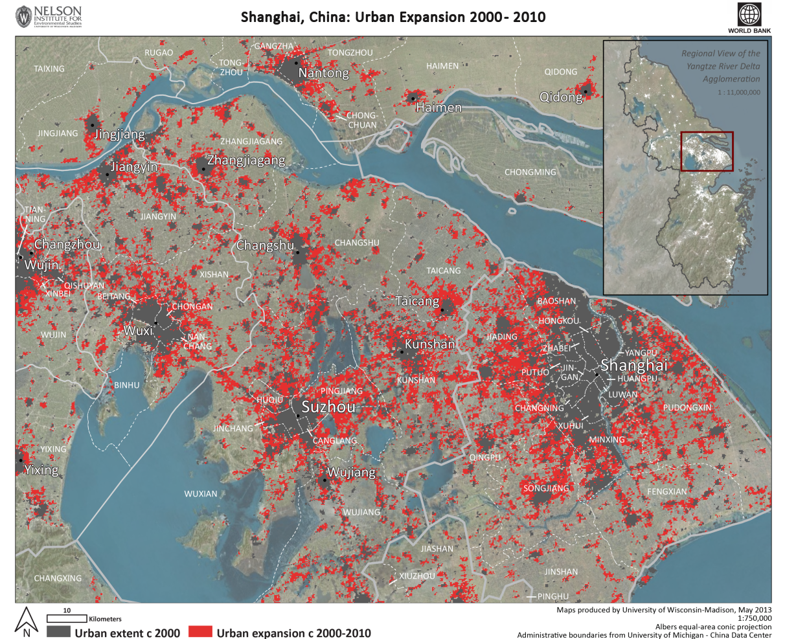

National scope - Urban Expansion in 2000-2010
This analysis provides the view into a built-up area and its population expansion at the country level.
As a source for demonstration of analysis at the national scope, urban expansion data provided by Annemarie Schneider from the University of Wisconsin-Madison have been used. Aggregated values for administrative units originate from a raster dataset with pixel size 250m, representing results of urban land cover classification of satellite data, namely:
The following map presents UW-MADISON urban expansion raster map.

The following indicators concerning urban expansion are presented in the application:
Built-up land circa 2000 (sq km)
Built-up land circa 2010 (sq km)
Urban expansion 2000-2010 (sq km)
These land cover data have been supplemented by population data derived using AsiaPop grids. Population density data for built-up areas have been transformed into aggregated counts for GADM administrative units.
The following indicators concerning population counts are presented in the application:
Population in built-up areas circa 2000
Population in built-up areas circa 2010
Development of population in built-up areas circa 2000-2010